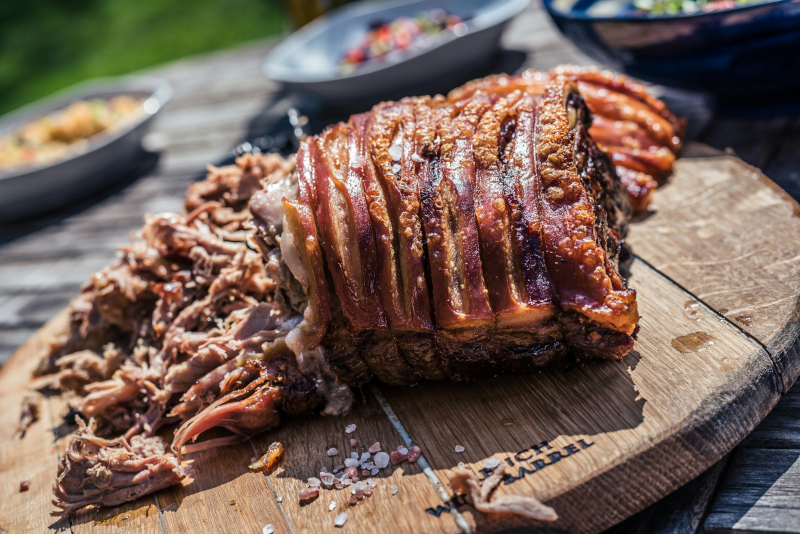

Pulled Pork

Pulled pork is flavorful,
tender pork dish created by rubbing spices on pork shoulder and
then braising or smoking the meat for a long time.
INGREDIENTS
- 1 (8 pound) pork shoulder roast
- quart apple cider, or as needed
- BBQ rub
- 5 tablespoons white sugar
- 5 tablespoons light brown sugar
- 2 tablespoons kosher salt
- 2 tablespoons paprika
- 1 tablespoon onion powder
- 1 tablespoon freshly ground black pepper
- 1 tablespoon garlic powder
- 3 cups hickory chips, or more as needed, soaked in water
- 1 onion, chopped
DIRECTIONS
- Gather all ingredients.
- Place pork shoulder in a large pot and add enough apple cider
to cover. Combine white sugar, brown sugar, salt, paprika,
onion powder, black pepper, and garlic powder in a bowl.
- Mix 1/4 cup of sugar rub into cider; reserve remaining rub.
Cover the pot and refrigerate for 12 hours. Preheat the smoker
to 210 degrees F (99 degrees C). Add enough wood chips to the
smoker.
- Pour cider brine into the water pan of the smoker; add onion
and 1/4 cup more sugar rub.
- Spread remaining sugar rub over pork shoulder. Transfer pork to
the center of the smoker.
- Smoke pork until very tender or until it reaches an internal
temperature of 200 degrees F (95 degrees C), about 8 hours.
Monitor hickory chips and liquid, adding more as needed.
- Transfer pork to a large platter and let it rest for 30 minutes
before shredding with forks.